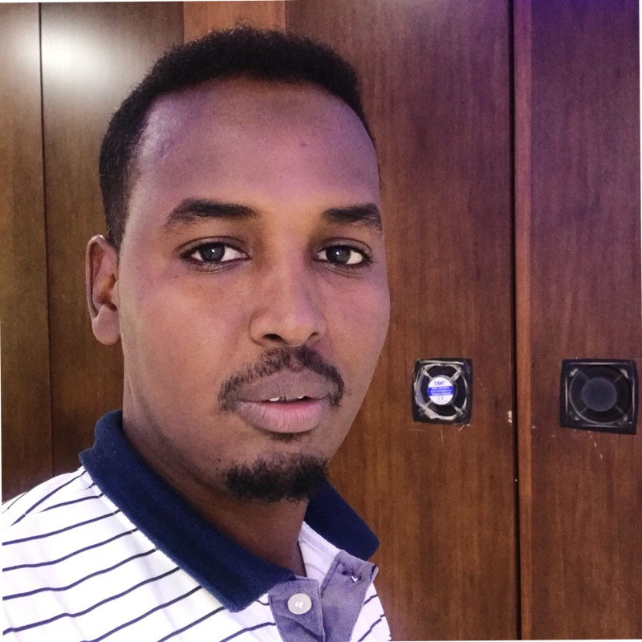

Abdifatah Ahmed
DevOps Engineer, DevOps advocate at Golis,
👉 ibnuahmed89@gmail.com
Tech stack
Python, JavaScript, NodeJS
Django, Express, Flask, FastAPI
React, Next JS
Oracle, SQL, MySQL
Work History
🚧 MMT Product Manager | Golis Telecom
11/2018 - Present
Worked on desingning, developing and managing activies
- MMT product & team management
- Responsible crise/emergency solution
- Ticketing system changes
- Preparing system update & upgrades
🚧 DevOps Engineer | Golis Telecom
01/2014 - 10/2018
creating and implementing systems software to analyzing data to improve existing ones.
- Maintanance of MMT product
- Maintanance of MMT infrastructure
- Configuration new insfrastructures
- preparing test for new updates & upgrades
🚧 English Teacher | Girible School
09/2013 - 01/2014
Teaching Intermediate students reading and writing english
- Preparing lessons
- developing teachers their skills of language
- preparing with students for central exam